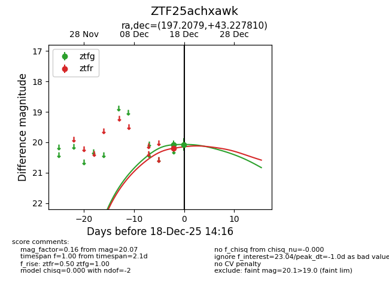
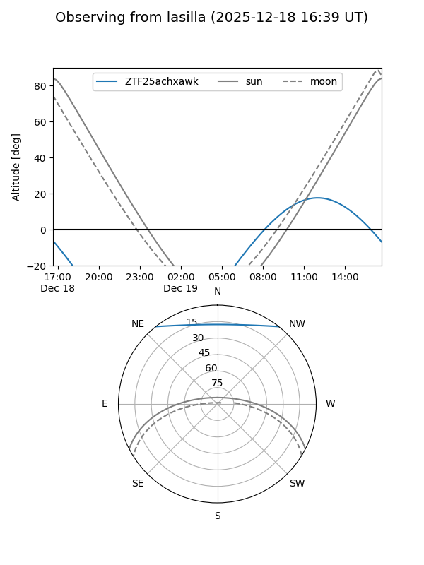
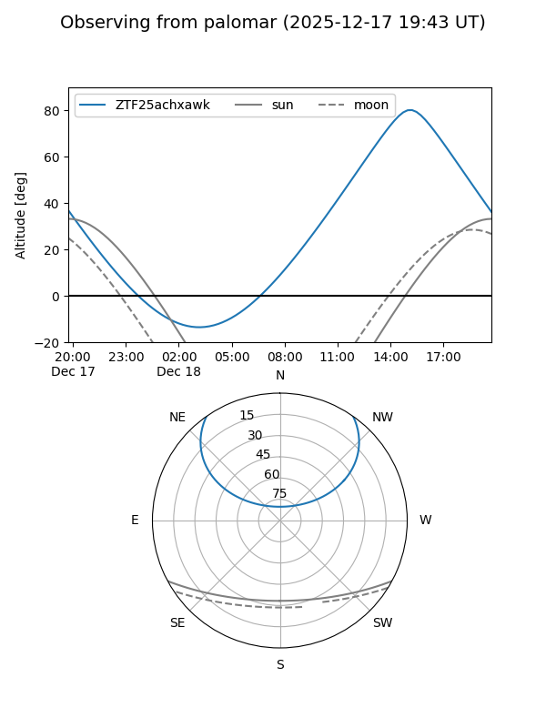

ZTF25achxawk
Target ZTF25achxawk at 2025-12-18 11:18
Aliases and brokers:
FINK: fink-portal.org/ZTF25achxawk
Lasair: lasair-ztf.lsst.ac.uk/objects/ZTF25achxawk
ALeRCE: alerce.online/object/ZTF25achxawk
alt names
ZTF25achxawk (ztf,fink_ztf)
Coordinates:
equatorial (ra, dec) = 197.2079,+43.22781
equatorial (HMS+DMS) = 13:08:49.89,+43:13:40.11
galactic (l, b) = (111.7025,+73.51915)
Photometry
last ztfg=20.08
1 ztfg detections
Lightcurve

Visibility


Additional plots